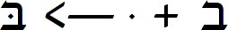
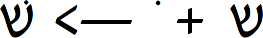
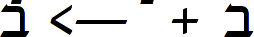
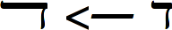
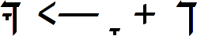
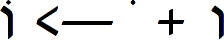
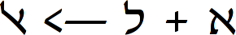
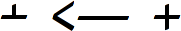
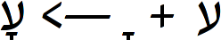

This page presents some FontForge scripts which I find useful in creating OpenType fonts. An example can be found at the end of the page.
AddHebrewGSUB.pe – defines standard substitutions and ligatures
AddHebrewGPOS.pe – defines positioning of diacritics based on information provided in the glyph comments in a special format.
InitHebrewGlyphData.pe – initializes static data for AddHebrewGPOS.pe.
DumpComments.pe – auxiliary script which dumps comments from the glyph info to an external text file.
LoadComments.pe – auxiliary script which loads comments from an external file produced by DumpComments.pe into a font.
Kern2Comments.pe – auxiliary script which converts kerning data into anchor positioning data in the glyph comments.
Hebrew typefaces may include several features for glyph substitution. These features can be created semi-automatically using the provided script AddHebrewGSUB.pe. The features include
Dagesh ligatures. All consonant glyphs except
the final forms, followed by dagesh glyph, can be replaced
with an appropriate composite glyph.

Shin ligatures. Shin glyph without sin
or shin dot can be followed by a separate sin/shin dot
glyph and possibly by dagesh. It will also be replaced by an
appropriate ligature.

Yiddish ligatures. Unicode specification includes
several letters which are present only in the Yiddish alphabet, such
as pasekh tsvey yudn, and these can replace the sequence of
solitary glyphs when appropriate. The script sets these ligatures to
be active only when the text is marked as an Yiddish language text
in a text editor (OpenType language tag “hebr{JII }”). This
feature is primarily of academic interest, as virtually no text
editors support OpenType with respect to language specification.

Justification alternatives. One can see in Torah
scrolls and printed editions, or in older newspapers, that line
justification is often achieved by replacing certain letters by
their wide counterparts. The script defines “jalt” substitution
feature to allow that. It seems that no software supports this
feature except Adobe InDesign.

Miscellaneous ligatures and substitutions.
Final kaf with shwa / qamats. The final
kaf is the only final form which may bear diacritics. The
diacritics are usually placed above the normal diacritics line,
almost in the middle of the glyph. In order to simplify the display
of these cases, some fonts may contain precomposed glyphs which
already include the final kaf with shwa and qamats.
In that case it is necessary to define these glyphs as ligatures.

Holam male. In a similar manner, vav with
holam also comes precomposed in some fonts, and then it
should be defined as a ligature.

Aleph-lamed. In prayer books printed in Ladino with
Hebrew alphabet, aleph and lamed are replaced by a
special ligature. The script defines this ligature twice. Once it
is defined as a mandatory ligature for Ladino texts, in the similar
form as Yiddish ligatures are mandatory in Yiddish texts. The other
time it is defined as a discretionary ligature (“dlig”), so the
designer can choose to use it in Hebrew text at her discretion, to
achieve some sort of medieval spirit.

Alternative plus. In books intended for religious audience
the plus sign is sometimes replaced with its alternative form,
which lacks the bottom stroke. The script defines this replacement
as a stylistic alternative (“salt”), to be used at the
designer's discretion.

Ayin without descender. In pointed texts a
diacritical mark under the letter ayin may interfere with
the descender, creating an esthetically unpleasant disturbance in
the normal text flow. For this purpose a contextual substitution
feature is introduced, which replaces regular ayin with ayin
without descender whenever it is followed by a lower point. Unlike
all other features, this is not automatic. As of December 2006,
Fontforge scripting doesn't support contextual substitutions, so
the script only defines an auxiliary “AAYN” feature tag, and
the user must perform some manual steps laid out inside the script
to complete the substitution feature. Besides that, the ayin
without descender is defined as a stylistic alternative (“salt”)
to ayin, for general usage.

The method I use for diacritics is somewhat idiosyncratic, but I find it convenient. I use FontForge metrics view (Window->New Metrics Window) to define a diacritical mark position in the form of a kerning pair between the basic glyph (consonant) and the mark (vowel). This view provides an immediate visual feedback, which greatly simplifies the task of the fine tuning. Then I run script Kern2Comments.pe which converts the kerning pair to a special form of comment stored in the appropriate basic glyph. Another script AddHebrewGPOS.pe converts these comments into final OpenType information.
The most interesting script in this process is AddHebrewGPOS.pe, as it creates the actual OpenType anchors which set the positioning of nikkud. The positioning values for the script are stored in a special format inside glyph comments. For example, the glyph lamed may contain the following comment:
%DiaToBase1=200 %DiaToBase2=220 %DiaToBaseU=220 %DiaToBaseO=-70
This comment can be translated as follows:
The anchor DiaToBase1 for
narrow diacritics (hiriq, shwa) shall be located at
(200,0)
The anchor DiaToBase2 for medium-width diacritics (tsere,
patah, qamats, segol) shall be located at
(220,0)
The anchor DiaToBaseU for qubutz shall be located
at (220, 0)
The anchor DiaToBaseO for holam haser shall be
located at (-70,0)
First the script creates five anchor classes named DiaToBase[123UO]. In this list 1 stands for narrow marks, 2 stands for medium-width marks, 3 stands for hataf marks, U stands for qubutz, and O stands for holam haser. Then it traverses all vowels and sets on each vowel an anchor of the appropriate class. The vowel anchors are always set at (0,0).
Furthermore, the script automatically traverses all consonants and parses their respective comments to create anchors as appropriate. The anchors set on consonants correspond to the anchors set on vowels, to produce OpenType marks positioning. Generally, each consonant bears an anchor for each class, thus having up to 5 anchors. In practice, some anchors may be absent, e.g. only glottal consonants have anchor DiaToBase3 defined.
The script supports the notion of glyph equivalence, e.g. comments stored for lamed are applied on lamed dagesh too, since these two glyphs should have similar diacritics positioning.
An auxiliary script InitHebrewGlyphData.pe defines static arrays of vowels and consonants for use in AddHebrewGPOS.pe. It maintains consonant equivalence tables, describing glyphs which should be considered equivalent for the purpose of diacritics positioning. It also maintains vowel tables which describe anchor classes and marks corresponding to these classes.
Another two auxiliary scripts DumpComments.pe and LoadComments.pe dump glyph comments to external file comments_dump.txt, and load them accordingly.
The package below contains a sample source SFD file and the resulting OpenType font.
In order to get the OpenType font from the source file, the following should be done:
Download the scripts AddHebrewGSUB.pe, AddHebrewGPOS.pe and InitHebrewGlyphData.pe.
Open the file David-Medium.sfd in the FontForge.
Run the script AddHebrewGSUB.pe by choosing “File->Execute script...”, “Call...” and selecting the script from the download location.
Perform manual instructions listed in the script.
Run the script AddHebrewGPOS.pe.
Export the font as OpenType by choosing “File->Generate Fonts...”, type “OpenType (CFF)”, “Save”.
The resulting file David-Medium.otf can be installed using your desktop's standard font installation procedure. Compare the results with the provided font to make sure everything went fine.